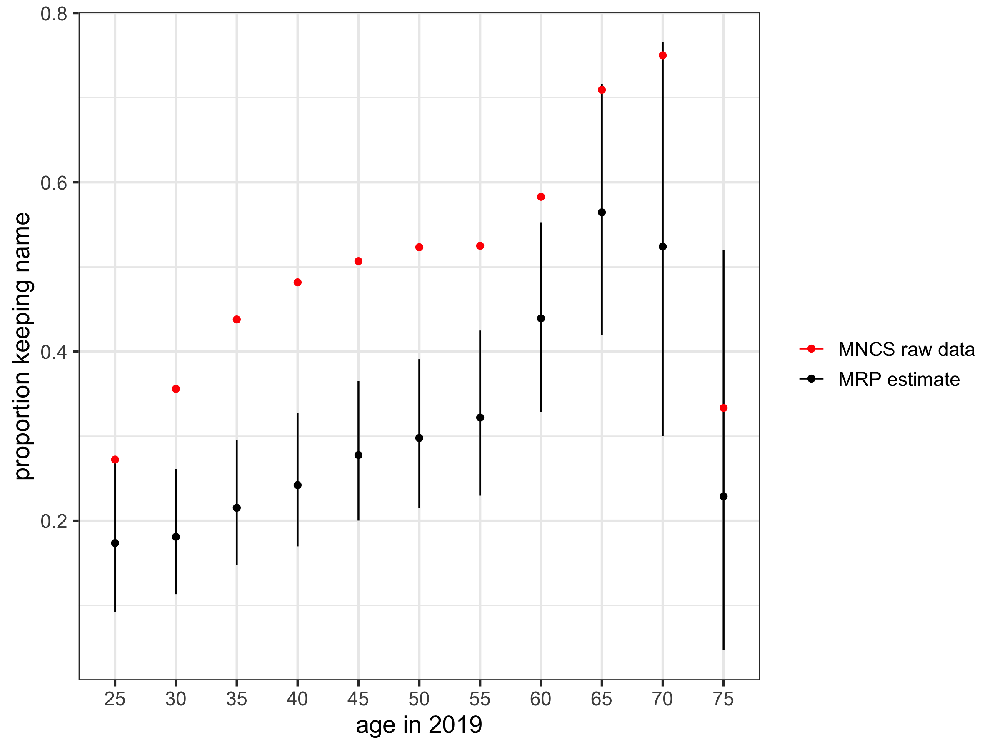
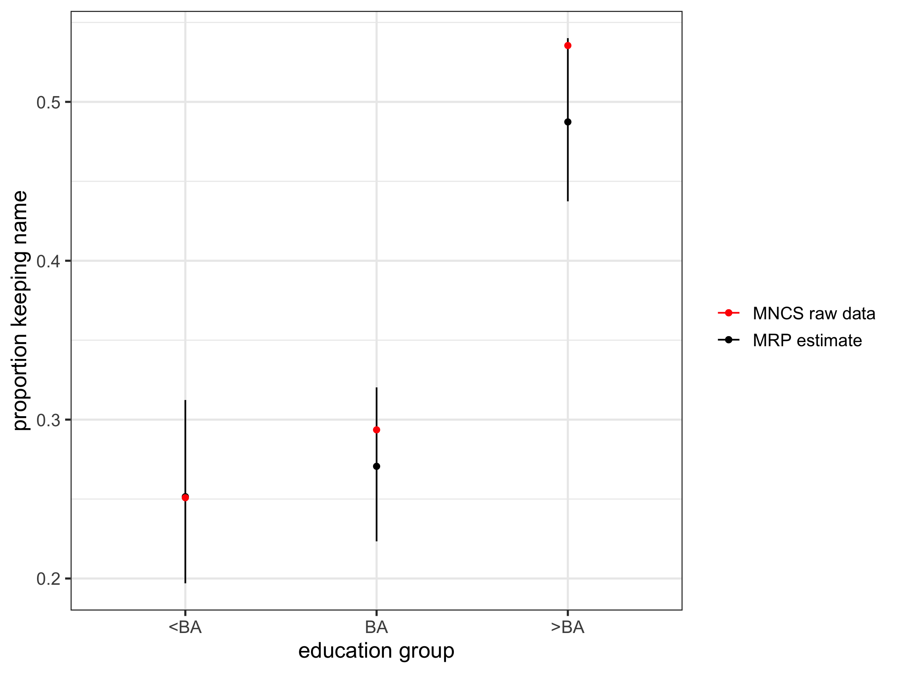
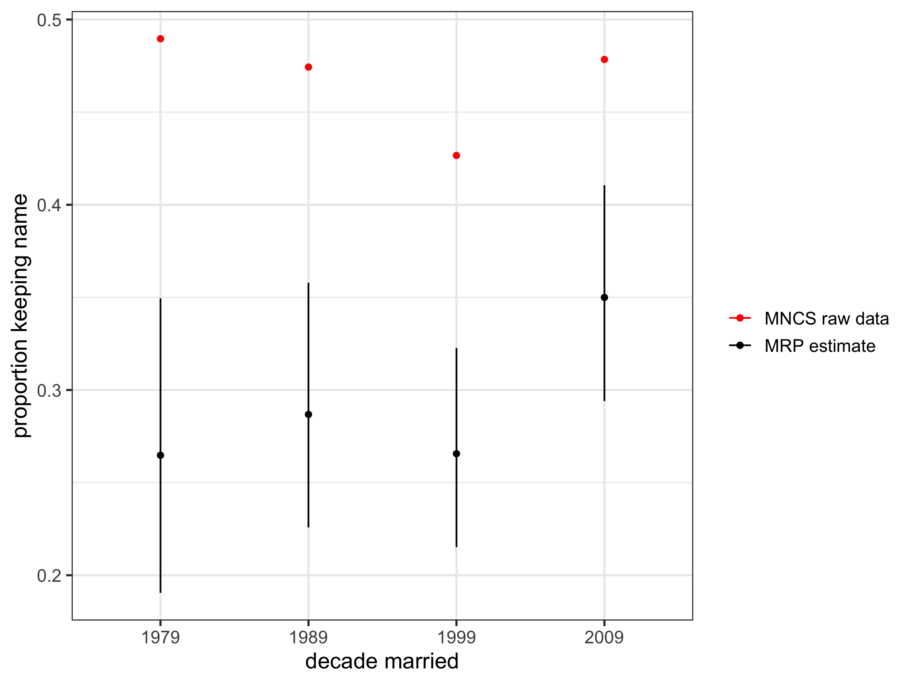
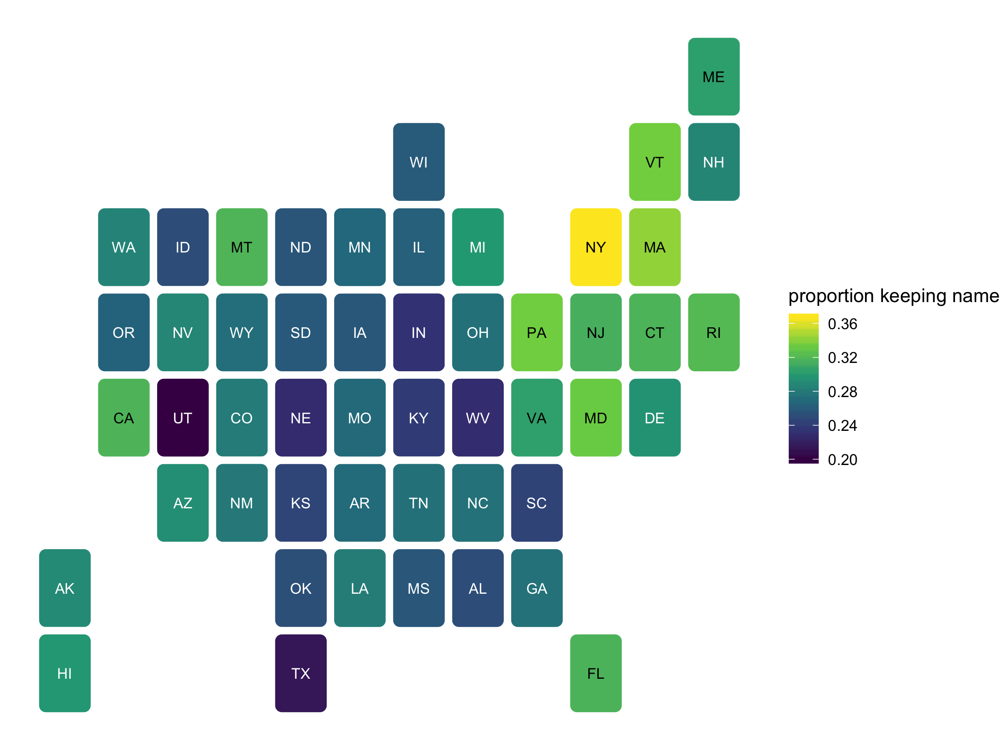

d_mncsAnalyzing name changes after marriage using a non-representative survey
Introduction
Recently on Twitter, sociologist Phil Cohen put out a survey asking people about their decisions to change their name (or not) after marriage. The response was impressive - there are currently over 5,000 responses. Thanks to Phil, the data from the survey are publicly available and downloadable here for anyone to do their own analysis.
However, there’s an issue with using the raw data without lots of caveats: the respondents are not very representative of the broader population, and in particular tend to have a higher education level and are younger than average. As such, if we looked at the raw estimates from the data, on indicators like the proportion of women who kept their name after marriage, it is unlikely to be a reasonable estimate for the broader population.
This is a very common problem for social scientists: trying to come up with representative estimates using non-representative data. In this post I’ll introduce one particular technique of trying to do this: multilevel regression and post-stratification (MRP). In particular, I’ll use data from the marital name change survey to estimate the proportion of women in the US who kept their maiden name after marriage.
What is MRP?
First, a very brief outline of MRP. Imagine we run a survey asking people if they like olives. We have a survey with 1000 respondents, 500 of which are aged 21+ and 500 of which are under 21. We could use the survey results to calculate the proportion of people who like olives. However, we know that the population distribution below and above age 21 is closer to 30%/70%, rather than 50/50 implied by our survey. So just taking the raw result from our survey over-represents the opinions of young people.
The ‘P’ bit: post-stratification
Given we know the age distribution of the broader population, we can reweight (post-stratify) our results: so in this example, an estimate of the proportion of people who like olives would be
\[ 0.3 \times \text{Proportion of those <21} + 0.7 \times \text{Proportion of those 21+} \]
This technique is called post-stratification. All we need is a reliable data source (such as a census, or the ACS in the US) that gives us the population weights. Data can be re-weighted based on many different categories, not just one: for example, we could post-stratify based on age, education, state of residence, etc.
The ‘MR’ bit: multilevel regression
Now imagine that instead of the survey above, we had a different survey, still with 1000 respondents, but 995 were aged less than 21 and 5 were 21+. That is, our survey respondents are even more biased. We could still post-stratify in exactly the same way as above to get a more representative estimate of liking olives. However, our estimate for those aged 21+ is based only on 5 people. We are putting a huge amount of weight on only 5 people.
Using multilevel regression as a first step before post-stratification tries to adjust for this by regressing the outcome on different variables of interest. So instead of using the proportion of people in each subgroup who like olives calculated from the survey, we would estimate this proportion based on a regression. We could include covariates like age, sex, education and income, and end up with an estimate of the proportion in each of these [age/sex/education/income] subgroups. The key is that we have another reliable data source (such as a census or survey) that allows us to get the actual population counts in order to post-stratify on.
The multilevel part refers to a set-up where information across different age groups (or education groups, or state groups, etc) is ‘pooled’ such that the responses in one group are partially informed by responses in other groups. The fewer observations in a particular subgroup, the more they are ‘pulled’ towards the mean outcome based on other subgroups. In this way, subgroups that have a small number of responses are in a sense weighted downwards in determining the overall outcome.
Example: retaining maiden names after marriage
Here’s an explicit example with the marriage name change survey.
The marital change name survey (MCNS) asks lots of interesting questions, but for starters let’s just look at estimating the proportion of heterosexual women who kept their maiden name after marriage. The survey collects this information as well as other characteristics that we would expect to be associated with a woman’s propensity to keep their maiden name, including age at marriage, year of marriage, education of respondent and state of residence.
The goal of our analysis is to perform two steps:
- Do a multilevel regression relating maiden name retention to age, year of marriage, state and education. In particular, for individual \(i\) let \(y_i\) equal 1 if the respondent did not change their name after marriage, and 0 otherwise. The model is
\[ Pr(y_i = 1) = \text{logit}^{-1}\left( \alpha^{age}_{a[i]} + \alpha^{educ}_{e[i]} + \alpha^{state}_{s[i]} + \alpha^{dec}_{d[i]}\right) \] where the \(\alpha\)s are age group, education group, state and decade married effects and the notation \(a[i]\) refers to the age group \(a\) to which individual \(i\) belongs to, etc. These are modeled in the form:
\[ \alpha^{age}_{a} \sim N(0, \sigma_{age}) \text{ for } a=1,2\dots A \]
where \(A\) is the total number of age groups. There are similar set ups for the other \(\alpha\)s.
- Using the estimates from the regression, post-stratify based on population weights in each age, year of marriage, education and state group, derived from the American Community Survey.
MRP in R using brms
Now to work through the example in R. A few code snippets are included in this post, but the full code file is available here. In order to reproduce the results, you will need to download the MNCS file from OSF, and also grab the 2017 5-year ACS data from IPUMS-USA.1
Data
First, I loaded in the MNCS data and did a bit of tidying up. I made a binary outcome variable kept_name, which indicates whether or not the respondent kept their original name after marriage. I also created a five year age group variable, a decade married variable (1979-1988, 1989-1998, … 2009-2018), and a three-group education variable (<BA, BA, >BA)2. The resulting data looks like this:
Next, I loaded in the ACS data that I got from IPUMS-USA. I extracted information on sex, age, marital status, year married, state, and education. I then restricted the data to just be ever-married women, and calculated new age, decade married and education variables to be consistent with those in the MNCS data. I then summed up to get the population counts in each age, education, decade married and state group. The data look like this:
cell_countsThese counts can be used to get proportions by group, which are in turn used in the post-stratification step. For example, to get the proportions in each age group:
age_prop <- cell_counts %>%
group_by(age_group) %>%
mutate(prop = n/sum(n)) %>%
ungroup()
age_propModel
Now we use the MNCS data to model the association between keeping name and age, education, state and decade married. I’m using the brms package, which is a wrapper to easily run models in Stan. The model is estimated in a Bayesian set up, which essentially means we put priors on the \(\sigma\) terms in the model above.3 You could also run this model in a maximum likelihood setting using glmer.
mod <- brm(kept_name ~ (1|age_group) + (1|educ_group) + (1|state_name) + (1|decade_married), data = d_mncs, family=bernoulli())Results
Now we can use the results of the regression to predict the outcome (whether or not a woman retained her name after marriage) for each of the age/education/state/decade married groups. We can make this prediction many, many times and then look at the resulting distribution to get the mean and 95% prediction intervals for whichever group of interest. For example, to get the estimated proportions and associated 95% PIs by age group:
res_age <- mod %>%
add_predicted_draws(newdata=age_prop %>%
filter(age_group>20,
age_group<80,
decade_married>1969),
allow_new_levels=TRUE) %>%
rename(kept_name_predict = .prediction) %>%
mutate(kept_name_predict_prop = kept_name_predict*prop) %>%
group_by(age_group, .draw) %>%
summarise(kept_name_predict = sum(kept_name_predict_prop)) %>%
group_by(age_group) %>%
summarise(mean = mean(kept_name_predict),
lower = quantile(kept_name_predict, 0.025),
upper = quantile(kept_name_predict, 0.975))Let’s plot these and include the raw MNCS proportions for comparison:
res_age %>%
ggplot(aes(y = mean, x = forcats::fct_inorder(age_group), color = "MRP estimate")) +
geom_point() +
geom_errorbar(aes(ymin = lower, ymax = upper), width = 0) +
ylab("proportion keeping name") +
xlab("age in 2019") +
geom_point(data = d_mncs %>%
group_by(age_group, kept_name) %>%
summarise(n = n()) %>%
group_by(age_group) %>%
mutate(prop = n/sum(n)) %>%
filter(kept_name==1, age_group<80, age_group>20),
aes(age_group, prop, color = "MNCS raw data")) +
scale_color_manual(name = "", values = c("MRP estimate" = "black", "MNCS raw data" = "red")) +
theme_bw(base_size = 14) +
ggtitle("Proportion of women keeping name after marriage")
The result is pretty interesting. Firstly, the MRP estimates are much lower than the raw – this is likely due to the fact that the survey has an over-sample of highly educated women, who are more likely to keep their name.4 There is some evidence of an upside-down U shape over age, which is consistent with past observations that there was a peak in name retention in the 80s and 90s.
We can calculate the results by other groups. Here, you can see the increase in name retention with education, with a particularly high estimate for those with postgraduate education:

And here it is by decade; some (weak) evidence to suggest maybe an increase in name retention in the most recent decade, which would be consistent with a New York Times piece published a few years back.

Finally, here are the results by state. Utah and New York stand out as particularly low and high, respectively. Note that these proportions are not standardized with respect to age or education.

Summary
We often have to deal with data that, while containing interesting and useful information, are not representative of the broader population that we’re interested in. The MNCS contains a wealth of information on name changes that occur around marriage, and the reasons for doing so. This information that is important to study social and demographic change, but not readily available in official data sources. However, raw estimates from this survey are most probably biased.
In this post I highlighted how MRP can be used to try and adjust for these biases. MRP is probably most commonly used in political analysis to reweight polling data,5 but it is a useful technique for many different survey responses. Many modeling extensions are possible. For example, the multilevel regression need not be limited to just using random effects, as was used here, and other model set ups could be investigated.6 MRP is a relatively easy and quick way of trying to get more representative estimates out of non-representative data, while giving you a sense of the uncertainty around the estimates (unlike traditional post-stratification). The example in this post serves as an introduction to both MRP and also the MNCS survey – there is so much interesting data in there, and it’s public!7
Footnotes
IPUMS is a wonderful resource and free once you register. From the 2017 5-year ACS sample you will need to select the following variables: AGE, SEX, STATEFIP, MARST, YRMARR, EDUC.↩︎
This is probably a bit coarse; the data are available to do a finer-grained split if desired.↩︎
I just used the default priors in
brms, which are half student’s t distributions, see here for more info: https://cran.r-project.org/web/packages/brms/brms.pdf↩︎FWIW, I changed my name. The Tasmania effect outweighs any education effect, it seems.↩︎
Shout-out to Petit Poll!↩︎
Look out for the work of Lauren Kennedy et al. looking into the impact of different MRP set ups, particularly for age effects.↩︎
If you’re interested in reproducible research Phil and I are giving talks at the Rostock Open Science Workshop which is being held at the Max Planck Institute for Demographic Research (MPIDR) on October 10th and 11th, 2019.↩︎